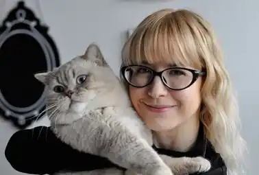
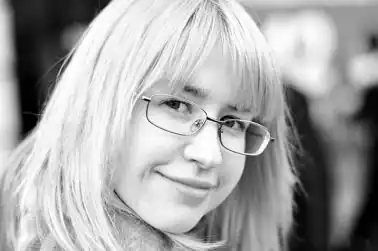

Олександра Вячеславівна Орлова — українська письменниця, авторка дитячих книжок, педагог-монтессорі, перекладачка, літературна оглядачка.
Народилася 31 березня 1984 року в Кам'янці-Подільському, де закінчила середню школу.
У 2001 році переїхала до Києва, навчалася в Київському Міжнародному Університеті на факультеті журналістики і пізніше в Інституті розвитку дитини при НПУ ім. М.П.Драгоманова. З 2004 року розпочала активну творчу та наукову діяльність, які поєдналися у першому в Україні експериментальному проекті з казкотерапії, писала казки та оповідання для дітей дошкільного віку, статті з психології. У 2007 році закінчила свою першу фантастичну повість "Катрусина любов", що була представлена серед конкурсних робіт у "Коронації слова". У 2009-му році почала працювати педагогом за методом Монтессорі на базі Українського Монтессорі-центру. В цей же період Олександра працювала над двома циклами філософських оповідань російською мовою, писала матеріали для українських педагогічних та дитячих періодичних видань. У 2012 році переїхала в Сієтл (штат Вашингтон). Наразі разом із чоловіком мешкає в місті Кіркленд, де продовжує письменницьку діяльність, займається перекладами, дописує для блогів та інформаційних ресурсів. Має британського короткошестного кота на ім'я Ешер.